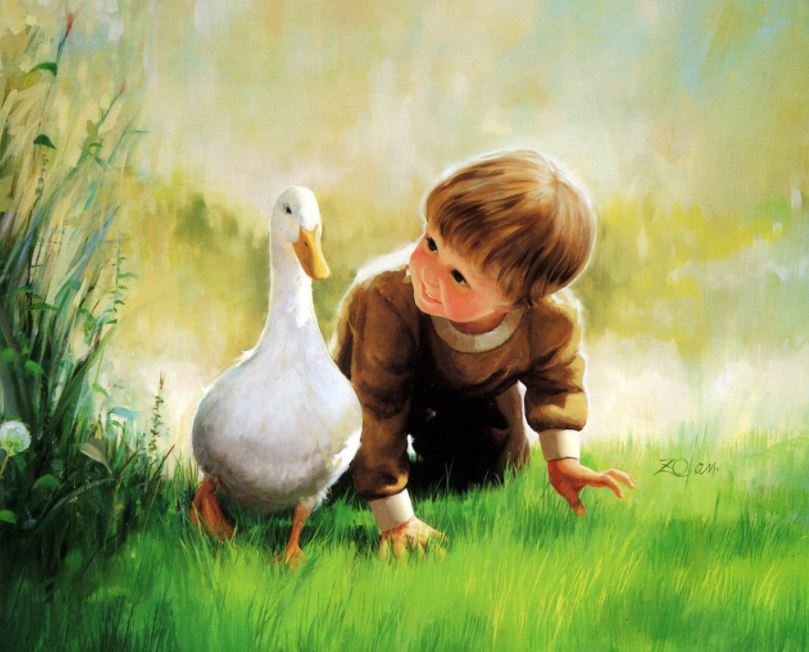
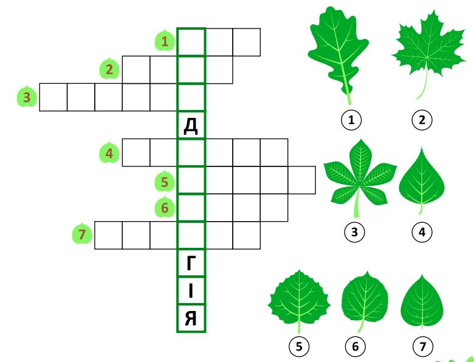
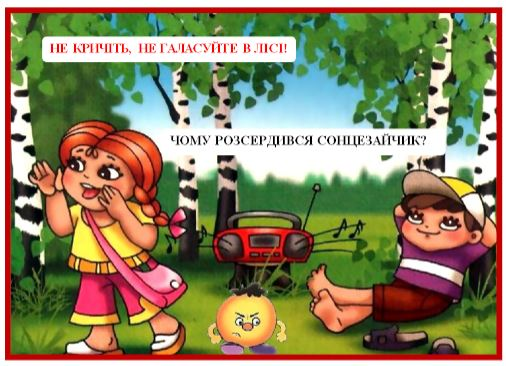

Корисні завдання
Картина Дональда Золана “Хлопчик і гусак” (до с. 28 підручника)
На картині Дональда Золана — історія знайомства маленького дослідника та качечки.
Роздивіться картину уважно. Про що вона? Хто герої картини-історії?
Чи цікава хлопчикові качечка? Як ви дізналися про це?
Уявіть себе на місці хлопчика. Що ви зробили б? Чому?
Що маля робить, аби познайомитися з птахом?
Чому хлопчик з такою цікавістю дивиться на качечку? (Мабуть, хлопчик живе у місті, тому ось так зблизька качечку він ще ніколи не бачив).
Що цікавого побачив хлопчик?
Це завдання-кросворд допоможе дитині повторити й краще засвоїти правопис назв різних дерев, тренуючи пам'ять, увагу та дрібну моторику. На сторінці зображені листки восьми дерев. Дитині потрібно подивитися на ці малюнки й вписати відповіді у клітинки кросворда по горизонталі.
Правильні відповіді: дуб (1), клен (2), каштан (3), береза (4), осика (5), липа (6), тополя (7). Розгадавши кросворд, дитина дізнається секретне слово, яке є назвою науки, що вивчає деревні рослини. Секретне слово: дендрологія.
Обговоріть дані ситуації
